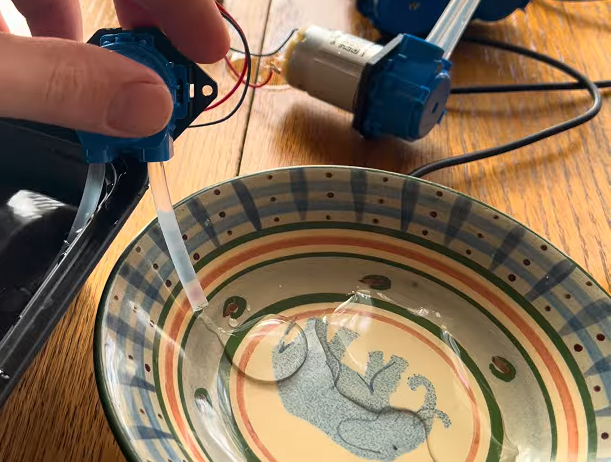

<div class="textcontainer">
<p class="margin"> </p>
<h3>Week 4: Microcontroller Programming</h3>
<h4>Computation Control of coreXY gantry, pumps, and servo motor</h4>
<p>(The original submission for this assignment is below, but I am adding this new section to try to improve my grade for this week)</p>
<p>Over the course of building my paper marbling machine, there were a bunch of different actuations that I needed to add, which fall into three categories: Gantry motion, Stick up/down, pump control</p>
<p>Gantry motion is built in. This is what my 3D printer Manta board is built for. It even comes with a preset coreXY mode which calculates the kinematics of how to convert the diagonal motion of turning a single motor into orthoganol motion instead.</p>
<p>The really interesting parts are the stick and the pumps. The stick simply needs to be able to go up and down; it is the very basic z-axis of our gantry. When it is up, it floats above the surface of the marbling and when it's down it adds patterns into the surface of the marbling. Effectively, it works exactly like a pen plotter. The fundamental controls for the peristaltic pumps remains the same. They need to be able to pump forward, backward, stop, and pulse (now called dose).</p>
<p>Since the manta board executes gcode, we needed to create custom gcode commands that corresponded to stick up, stick down, motors forward, motors backward, motors stop, and motors dose. Here is the code that lives on the Manta board which achieves this:</p>
<a id="btn" href="./pumps_and_stick.cfg" download>Custom Gcode Commands</a>
<p class="margin"> </p>
<p>In essence, this gives us a number of new gcode commands which the board will be able to parse: </p>
<p>STICK_UP: moves the stick out of the marbling</p>
<p>STICK_DOWN: moves the stick into the marbling</p>
<p>PUMP_FORWARD PUMP=i, where i is the integer index of the pump</p>
<p>PUMP_REVERSE PUMP=i, where i is the integer index of the pump</p>
<p>PUMP_STOP PUMP=i, where i is the integer index of the pump</p>
<p>DOSE PUMP=i SECONDS=s DIR=d, where i is the integer index of the pump, s is a float for the number of seconds, and d=FWD|REV is the direction for the dose.</p>
<p>Now, in order to get these commands into the gcode correctly, I needed to create a second program. To create a file for my paper marbler to run, I design the pattern that I want it to make in inkscape. Then, the SVG that I make in inkscape is converted into gcode which the Manta board is able to interpret. It is in that gcode that I need my custom gcode commands to move the stick and to activate the pumps. To make this happen, I created a custom gcode compiler, which takes an SVG as input and looks for certain features. If it sees a colored circle anywhere in the SVG file, it interprets that as a command to drop ink of that color at that location of the marbling. For the stick, it replaces the standard "z-axis up" command with the STICK_UP command, and "z-axis down" with STICK_DOWN.</p>
<a id="btn" href="./svgKlipperConverter.py" download>Custom SVG to Gcode Converter</a>
<p class="margin"> </p>
<p>Between these two files, I am able to both generate and then execute custom actuations from a standard 3D printer board. You can see below the actuations from these custom gcode commands:</p>
<iframe width="560" height="315" src="https://www.youtube.com/embed/wMA2zJzAbik?si=1xFRuzf6j5mVKY3y" title="YouTube video player" frameborder="0" allow="accelerometer; autoplay; clipboard-write; encrypted-media; gyroscope; picture-in-picture; web-share" referrerpolicy="strict-origin-when-cross-origin" allowfullscreen></iframe>
<iframe width="560" height="315" src="https://www.youtube.com/embed/ihgtcJXaxZw?si=D7947dsFacjvKA_z" title="YouTube video player" frameborder="0" allow="accelerometer; autoplay; clipboard-write; encrypted-media; gyroscope; picture-in-picture; web-share" referrerpolicy="strict-origin-when-cross-origin" allowfullscreen></iframe>
<div class="spacer"></div>
<div class="spacer"></div>
<div class="spacer"></div>
<h4>Computation Control with Paristaltic Pumps</h4>
<p class="margin"> </p>
<p></p> <img src="./pumpPulse.png" style="height:250px">
<p class="margin"> </p>
Continuing from last week's wiring of my peristaltic pumps, the focus this week was to get fine computational control over the pumps.
<p class="margin"> </p>
These pumps will be used to drip single drops of ink onto my paper marbling and should also be capable of emptying all the ink held within the pump's tubes back into the reservoir.
<p class="margin"> </p>
This means that my goals are to 1: be able to manually control each individual pump to push liquid forward or backward, and 2: trigger brief forward pulses to my pumps which equate to a single drop of liquid being released from the head.
<p class="margin"> </p>
All of this also needs to be controllable from my computer, not the microcontroller, as my commputer will house the interface for designing and generating paper marblings.
<p class="margin"> </p>
Here's what I came up with:
<p class="margin"> </p>
<iframe
width="1000"
height="600"
src="https://www.youtube.com/embed/CHpRYmVB-Ow?si=Ir7O6m9sdARzyqE6"
title="YouTube video player"
frameborder="0"
allow="accelerometer; autoplay; clipboard-write; encrypted-media; gyroscope; picture-in-picture; web-share"
referrerpolicy="strict-origin-when-cross-origin"
allowfullscreen>
</iframe>
<p class="margin"> </p>
Overall, this was a total success! I was able to get control from my computer of each pump individually, allowing for both forward and back pumping, as well as short pulses that push out a single drop of liquid!
<p class="margin"> </p>
I did, however, notice an error in my wiring. I am both controlling and powering the pumps from my microcontroller which isn't rated for such power demanding devices. It can run one, even two, without issue, but not all four at once, and honestly, it shouldn't even be running one.
<p class="margin"> </p>
This is a simple rewiring and I'm not concerned in the least, the only reason why I haven't done it already is that I am currently out of town and I didn't bring any spare components with me.
<p class="margin"> </p>
So, next steps is to correct the wiring so I have a seperate power supply for the four pumps and then extend my computational control of the pumps such that you control them through a GUI with a Python backend rather than by manually inputting bytecodes directly into the Serial Monitor. This, once again, is easy and will make controlling the pumps integratable with my paper marbling editor and make the whole system more user-friendly.
</div>